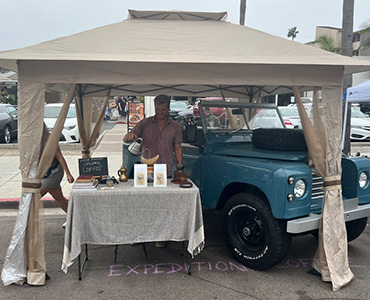

2024 / brand world / media direction
A concept coffee brand built like a travel journal: tactile packaging, origin storytelling, pop-up tasting energy, and a visual system designed to feel collected from the road.

The direction pairs product clarity with field-note texture: route marks, origin cues, warm photography, and an e-commerce flow that feels more like entering a place than shopping a shelf.
The brand language was designed to stretch across bags, pop-up signage, web comps, tasting cards, and social fragments without losing its sense of travel and discovery.